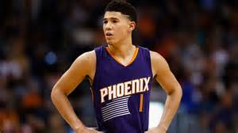

| Name |
Alton Burnett |
|
Grade
|
9th |
| School |
Citrus Valley High School |
| Favorite Sport |
BasketBall |
| Favorite Basketball Player |
Devin Booker

Click on the Devin Booker picture to learn more about him.
|
| My favorite passtime |
Youtube videos |
| Least favorite activity |
Homework |
| Favorite song |
Fall Apart - Post Malone |
| Hobbies |
Shoe collecting |
| Favorite Places |
Basketball Court |
| My Pets |
Dogs, birds, turtle, bunny, and fish |
| Hobbies |
My favorite hobbies are basketball, shoe collecting, making art designs, and writing and making different music. These hobbies have always been my hobbies since I was little and they will never change. I like these hobbies so much because I have a passion and drive for them that no one can match. That is why these hobbies are so important to me and how they revolve around my life. |
| My Future Career: |
My future career is in science has a biologist or working with different types of animals. The main reason I want to go into this field is because science and the unknown always interests me. I also like to find out and make new discoveries so this is why science would be a good field for me. |